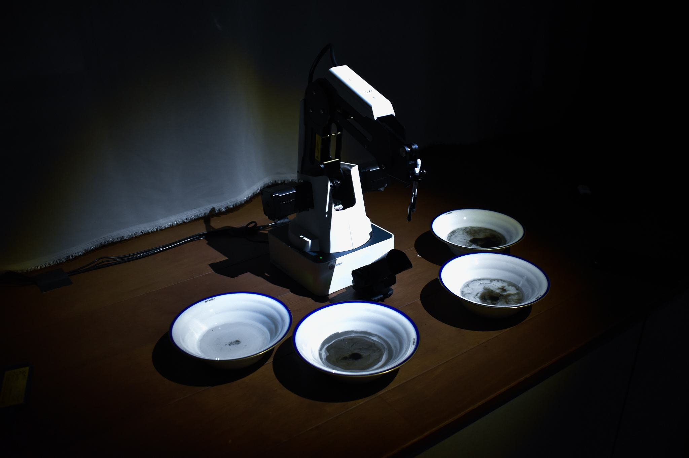
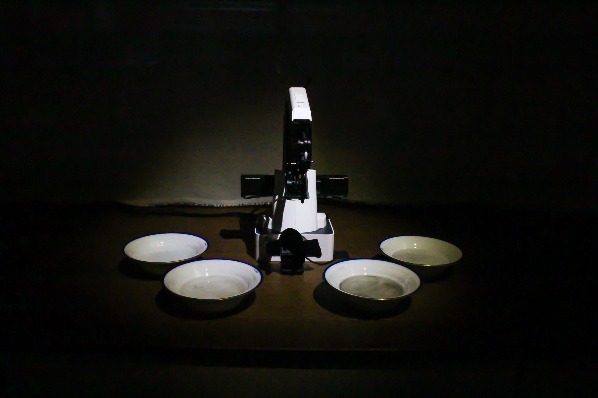
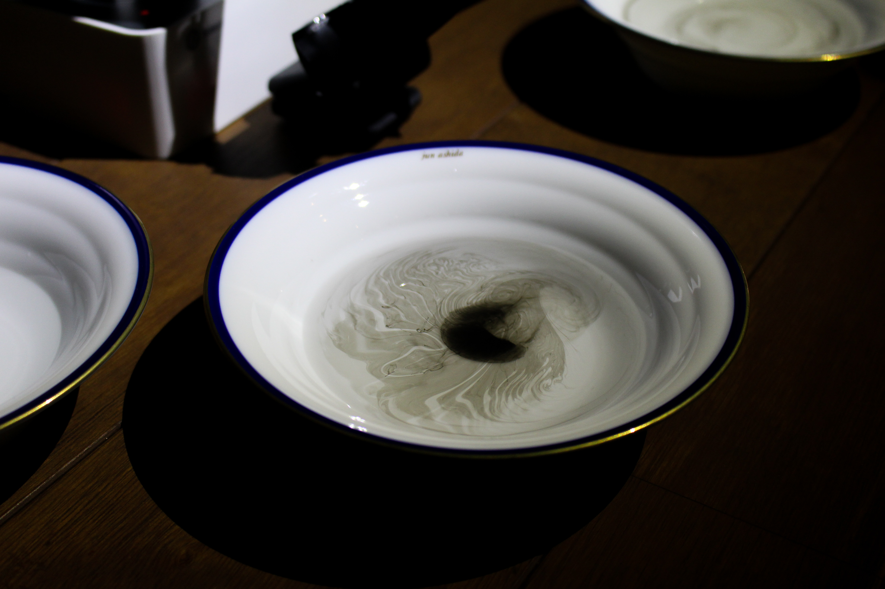
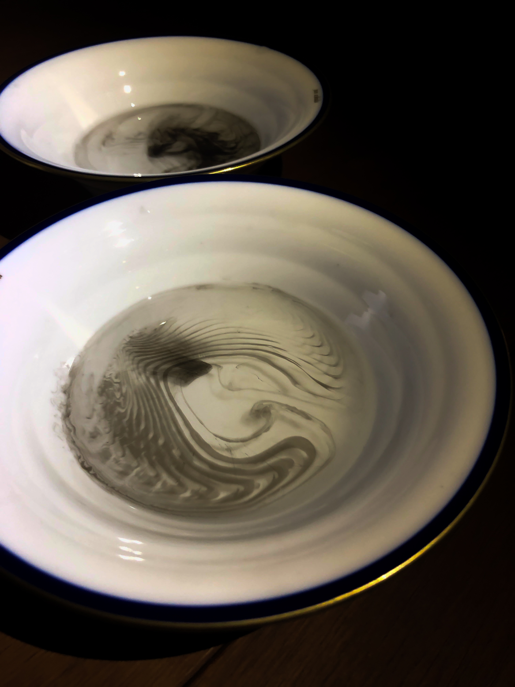

a rest within one'sself
, Drawing unconscious things by marbling
Our heart keeps beating at regular intervals every day. Although the heart is inside our body, we usually are not conscious of its heartbeat.In this work, we aim to provide an experience where the participants become conscious of something unconscious within them; heartbeat.The robot arm catches information that often fall through our minds, and expresses it through a Japanese marbling technique called “Suminagashi (floating ink)” . This work encourages participants to not just focus on tangible information around us, but to reconsider the meaning of seeking for information in the unconscious world.
私達の心臓は毎日動き続け、一定の間隔で脈を打ち続けている。 心臓は、自分の身体の内側に存在するものであるにも関わらず、その鼓動を意識することはない。 本作品は、そのような意識されない対象である鼓動に対して、意識を向けさせるための作品である。 人にとっては無意識下に存在する情報を、ロボットアームが読み取り、墨流しという行為を通して表現する。 目に見える情報を追うばかりではなく、目には見えない無意識の中の情報を観る意味への再考を促す。



Credit
Idea: Juri Fujii, Hidemaro Fujinami
Program: Hidemaro Fujinami, Yuya Munekata
Hardware: Juri Fujii
Assistant: Hanna Saito
Original Member: Juri Fujii, Hidemaro Fujinami, Risako Kawashima, Ken Haga
Skill
Marbling, Hardware, Robot, Hardware Engineering
Exhibition
iiiExtra 2019